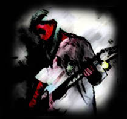
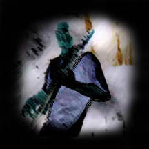
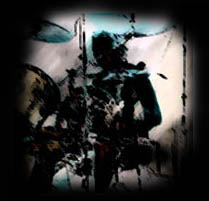
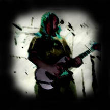

|
 Hsien-Hsiu - Guitar/Synth  Ken - Bass/Vocals
|
 Bryan - Drums/Percussion  Dean - Guitar/Backing Vocals |
It's heavy music spearheaded by two crunching 7-string guitars on a foundation of pounding bass and drums. Before the name Drawn Under existed, the idea for the band was realized in February of 1997 in Austin, TX. The original lineup included current members Hsien-Hsiu Liao and Bryan Wofford. In September of 1997 after months of casual jams, Drawn Under decided to get serious and recruited Ken Liao to take over the bass duties. After a year and a half of problems with various singers, the band decided it was time to start playing live after finally completing a lineup in early 1999. Drawn Under soon began playing live locally in establishments such as Steamboat, The Black Cat Lounge, Flamingo Cantina and Babe's. In an effort to improve the band even further, Ken assumed lead vocal duties in addition to bass, and Dean Dichoso was added as a second guitarist to further thicken the sound. Drawn Under recorded a demo in December of 1999 and their song, "Burned Inside" and others have received air play on several radio stations including WKNH 91.3 FM's Beyond The Grave radio show. The band was voted one of the top ten hard rock/metal bands in the Austin Chronicle's 1999-2000 Music Awards.